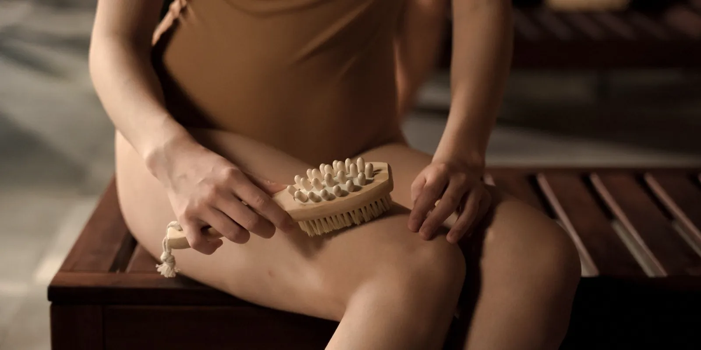

Medias de compresión en el posparto: cuánto tiempo seguir usándolas
Las piernas se te siguen viendo hinchadas semanas después del parto, y la media de compresión del embarazo quedó ahí, sin instrucciones claras de hasta cuándo ponértela. Esto es lo que cambia entre la hinchazón normal del posparto, la media que te mandaron por riesgo de trombosis, y el momento en que ya puedes guardarla.

Si todavía estás embarazada y llegaste buscando cuándo empezar a usarlas, el momento es otro: eso está en medias de compresión en el embarazo: cuándo usarlas. Aquí hablamos de después del parto, de la cesárea o el parto vaginal que ya pasó, y de esos primeros días de cuarentena en casa en Medellín, con el bebé en brazos y las medias de compresión posparto todavía puestas, sin que nadie te haya dicho hasta cuándo.
¿Por qué siguen hinchadas las piernas después de dar a luz?
Durante los nueve meses el cuerpo retuvo más líquido del habitual y aumentó el volumen de sangre que circula. Ese ajuste no se revierte en un día. A eso se suman los líquidos que recibiste por vena durante el trabajo de parto o la cesárea, y el esfuerzo de pujar, que durante horas aumenta la presión en las venas de las piernas.
Por eso en las primeras semanas del posparto es común seguir viendo los pies y los tobillos más llenos de lo normal, sobre todo al final del día. Si además te tocó una cuarentena con calor pegado, subiendo y bajando escaleras con el bebé en brazos o haciendo turnos de pie para las tomas de la noche, las piernas se sienten peor al anochecer. Eso, solo, no es una alarma.
La media del hospital y la que compraste en el embarazo no son lo mismo
Aquí se mezclan dos cosas distintas y conviene separarlas. Una es la compresión graduada de uso diario, pensada para piernas pesadas, cansadas o con várices: la misma que usabas en el embarazo y que puedes seguir usando en el posparto mientras haya hinchazón. La otra es la compresión que te indicaron en la clínica por riesgo de trombosis venosa, sobre todo si tuviste cesárea o pasaste varias horas sin moverte: esa suele ser de mayor presión, se define en el hospital según tu riesgo particular, y a veces se combina con dispositivos de compresión mecánica mientras estás hospitalizada.
En Seravena preferimos no indicar la media de uso diario como si fuera un sustituto de la profilaxis de trombosis que te ordenaron donde tuviste el parto: son dos herramientas para dos riesgos distintos, y la segunda la define tu médico, no la talla que compraste en la farmacia.
Esa es también la razón por la que no se autoindica: si tuviste factores de riesgo adicionales (cesárea, inmovilidad prolongada, un coágulo previo), es tu médico quien decide si la compresión por trombosis se extiende después del alta, y por cuánto tiempo.
¿Cuánto tiempo usar medias de compresión posparto en Medellín?
Para la hinchazón normal del posparto no existe un número de días igual para todas. En muchos casos, lo razonable es seguir usándolas mientras la hinchazón se nota, y eso suele mejorar bastante en la primera semana o las dos primeras; después de una cesárea, por la cirugía misma y por moverte menos al principio, puede tomar un poco más.
No hay una fecha única que aplique a todo el mundo.
Lo que sí vale la pena tener presente es que el riesgo de trombosis venosa es más alto justo en estas primeras semanas después del parto, así que si tu caso incluye algún factor de riesgo, la decisión de seguir con compresión (y de qué tipo) se conversa con quien te atendió el parto, no se decide sola viendo un video.
Señales de que ya puedes dejar de usarlas
- Te despiertas con las piernas del mismo tamaño que antes de acostarte, sin marca de la media ni fóvea al presionar.
- Ya no se sienten pesadas ni calientes al final del día, aunque hayas estado de pie varias horas.
- Si tenías cita de control posparto (usualmente entre las cuatro y las seis semanas), quien te atiende confirma que la hinchazón ya es la de cualquier persona, no la del posparto reciente.
Lo que la media no resuelve: no hace desaparecer las várices que salieron durante el embarazo si no mejoran solas, ni reemplaza una valoración con eco doppler si una pierna sigue dura, dolorosa o distinta a la otra. Si después de la cuarentena las venas siguen marcadas, pesadas o te preocupan, eso ya es terreno de una valoración de insuficiencia venosa, no solo de una media.
Antes de tu próxima cita, fíjate en algo simple: si la hinchazón es igual en las dos piernas o solo en una, y a qué hora del día empeora. Ese dato, dicho en la consulta, ayuda más que cualquier media. Si después de la cuarentena las piernas siguen hinchadas, pesadas o con venas que te preocupan, también puedes agendar una valoración en Seravena para revisarlo con calma, con la media correcta y la talla bien tomada ya sea que la compres en Medias de compresión en Colombia: cómo elegir la talla y el grado o la lleves de vuelta a casa después de un viaje, como en Medias de compresión avión: no son todas iguales a las de uso diario.
Preguntas frecuentes
¿Cuánto tiempo debo usar las medias de compresión después del parto?
No hay una fecha única. Si es por la hinchazón normal del posparto, en muchos casos basta con usarlas mientras la hinchazón se ve y se siente, y suele bastar entre una y dos semanas. Si te las mandaron en la clínica por riesgo de trombosis, el tiempo lo define tu médico, no el empaque de la media.
¿Las medias de compresión que usé en el embarazo sirven también para el posparto?
Casi siempre sí, si eran para piernas pesadas o várices y no por indicación médica de trombosis. Puedes seguir usando las mismas mientras haya hinchazón. Lo que no debes hacer es asumir que esa misma media reemplaza la profilaxis de trombosis si tu médico te ordenó algo distinto tras una cesárea.
¿Es normal que las piernas sigan hinchadas varias semanas después de dar a luz?
Cierto grado de hinchazón en ambas piernas durante la primera semana o dos es común, porque el cuerpo todavía está eliminando el líquido que retuvo en el embarazo. No es normal si la hinchazón es solo en una pierna, si viene con dolor, calor o enrojecimiento, o si no mejora después de la segunda semana: ahí hay que consultar pronto.
¿Puedo dejar de usar las medias de compresión si ya no veo las piernas hinchadas?
Si era por hinchazón normal, sí: cuando las piernas se sienten livianas al acostarte y se ven iguales al despertar, ya puedes dejarlas. Si te las habían indicado por riesgo de trombosis, confirma primero con quien te las mandó antes de suspenderlas.